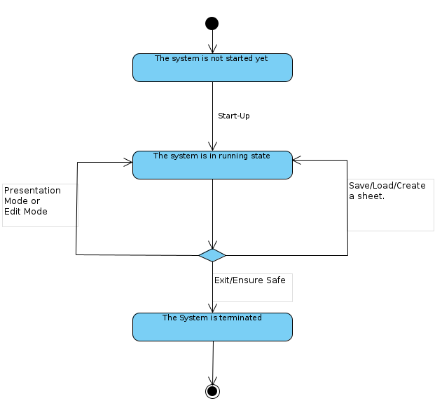
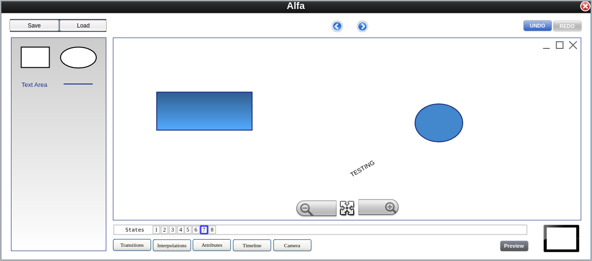

1. Disha Bodiwala
2. Kwame Owusu-Boakye
3. Jagbir Singh Aulakh
4. Shiv Umeshbhai Tilva
5. Vraj Sanjaykumar Patel
A state is a combination of 0 or more objects. Multiple states are present on a single sheet and change according to transitions.
Objects can have 1 or more attributes and can belong to multiple states using a link id.
It describes a set of possible features related to an objects or the camera.
Transitions provide a transformation from one state to another through a triggering mechanism. This causes the camera to move to the next state accordingly.
Interpolation provides information about transition of objects. The same interpolation method can be applied to multiple objects.
It has 1 or more attributes and focuses on current state.
A timeline describes the sequence (flow) of transitions which can be presented or edited according to modes.
Each sheet consists of two mode types (Edit and Presentation) where edit mode is the default one in which user can define and manipulate various states, transitions, objects, and interpolation. The presentation mode presents the timeline.
User can create a new sheet or load an existing sheet. After editing a sheet, user can save it for later use. Each sheet can contain multiple states.
This describes the occurrence of an event in relation to a transition.
1. Sheets
1.1. As a user, I should be able to create a new SHEET.
1.2. As a user, I should be able to load a previously saved sheet.
1.3. As a user, I should be able to save a sheet.
1.4. As a user, I should be able to specify the start state.
1.5. As a user, I should be able to exit the sheet.
2. States
2.1. As a user, I should be able to add a state to a sheet.
2.2. As a user, I should be able to delete a state.
2.3. As a user, I should be able to reorder states.
2.4. As a user, I should be able to view the presentation at any state.
3. Objects
3.1. As a user, I should be able to add different type of objects.
3.2. As a user, I should be able to delete an object.
3.3. As a user, I should be able to edit an object (by changing value of attributes).
4. Transition
4.1. As a user, I should be able to add a transition.
4.2. As a user, I should be able to delete a transition.
4.3. As a user, I should be able to edit a transition.
5. Interpolation
5.1. As a user, I should be able to adjust an object’s mode of transition.
6. Mode
6.1. As a user, I should be able to switch two modes (Edit or Presentation).
Subject: The Prezoom System
Actors involved: User, The operating System
Requirements addressed: 1.*, 2.*, 3.*, 4.*, 5.*
Precondition: The system is not started yet
Postcondition: The system is in running state.
Subject: The Prezoom System
Actors involved: User, The operating System
Requirements addressed: 6.*
Precondition: The system is in running state.
Postcondition: The system is in running state.
Subject: The Prezoom System
Actors involved: User, The operating System
Requirements addressed: 1.5
Precondition: The system is in running state.
Postcondition: The system is terminated
Alternative paths: If the user selects cancel in step 2 the use case stops with postcondition “The system is started”.




